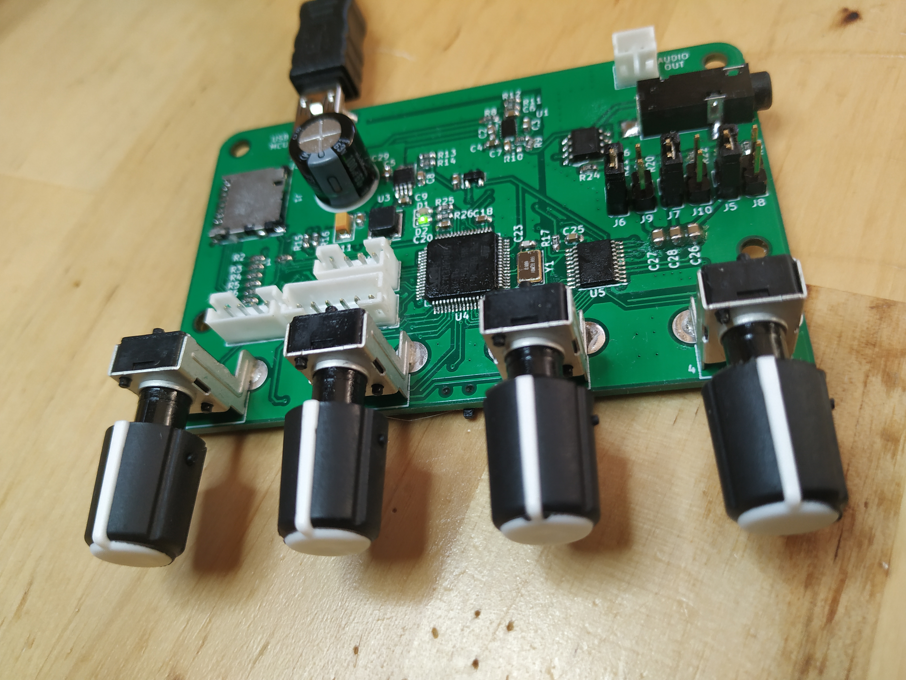
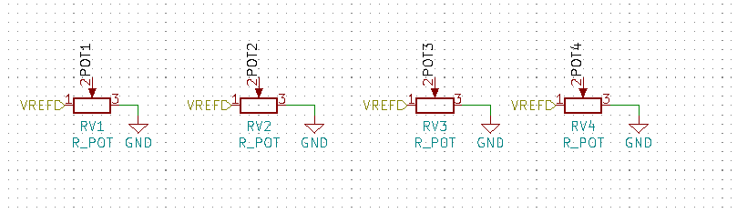
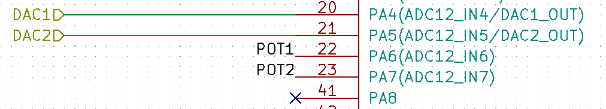
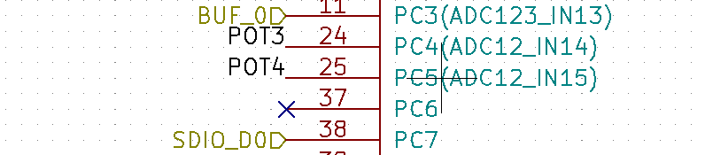

I have been working on a PCB for sound generation for a while, the result of this work is shown in the picture below.
I am a beginner when it comes to electronics and definitely totally clueless when it comes to audio electronics, so if this board will ever make a noise at all is left to be seen. But it does show signs of life! The MCU can be flashed, the LEDs can be blinked and the position of the 4 knobs on the front can be read using the ADC.
If you are interested in more of the story behind this PCB there are a few videos about it on YouTube.
This text is just about the reading of the values from the 4 knobs on the PCB, but I will write about more aspects of this board in the future (if anything else works that is).

The PCB was designed using KiCad and the design is available at GitHub.
In the schematics there are 4 potentiometers, the knobs, named POT1 to POT4. These pots have 3 legs one of which are connected to ground (GND), another to 3.3V and a third, in between the other two, is connected to the MCU. Think of it as there are two adjustable resistors, one between 3.3V and ADC pin and another between ADC pin and GND. This creates a voltage divider circuit with the result of a voltage between 0V and 3.3V that is fed to the ADC pin on the MCU. This voltage can then be read from software running on the MCU as a value between 0 and 4095 (12 bit ADCs).

POT1 and POT2 are connected to GPIO pins named PA6 and PA7 on the stm32f4. The information (ADC12_IN6) and (ADC12_IN7) on the schematics can also be found in the datasheet for this MCU and means that analog to digital conversion can be done on these pins using either ADC unit 1 or 2 on channel 6 and 7. On this MCU there is a total of three ADC units and 16 channels.

POT 3 and 4 are connected to GPIOs PC4 and PC5 that can be sampled using ADC unit 1 or 2 on channels 14 and 15.

The following pieces of information will be important when writing the code.
Given the information above we know that all of the potentiometers can be read using just one ADC. And I picked ADC 1. In the file mcuconf.h the following set of defined related to ADC can be found. Here ADC 1, 2 and 3 can be individually turned active by setting the STM32_ADC_USE_ADCX to TRUE.
/*
* ADC driver system settings.
*/
#define STM32_ADC_ADCPRE ADC_CCR_ADCPRE_DIV4
#define STM32_ADC_USE_ADC1 TRUE
#define STM32_ADC_USE_ADC2 FALSE
#define STM32_ADC_USE_ADC3 FALSE
#define STM32_ADC_ADC1_DMA_STREAM STM32_DMA_STREAM_ID(2, 4)
#define STM32_ADC_ADC2_DMA_STREAM STM32_DMA_STREAM_ID(2, 2)
#define STM32_ADC_ADC3_DMA_STREAM STM32_DMA_STREAM_ID(2, 1)
#define STM32_ADC_ADC1_DMA_PRIORITY 2
#define STM32_ADC_ADC2_DMA_PRIORITY 2
#define STM32_ADC_ADC3_DMA_PRIORITY 2
#define STM32_ADC_IRQ_PRIORITY 6
#define STM32_ADC_ADC1_DMA_IRQ_PRIORITY 6
#define STM32_ADC_ADC2_DMA_IRQ_PRIORITY 6
#define STM32_ADC_ADC3_DMA_IRQ_PRIORITY 6
In another configuration file called halconf.h, the ADC subsystem must be turned active by defining HAL_USE_ADC to TRUE.
/**
* @brief Enables the ADC subsystem.
*/
#if !defined(HAL_USE_ADC) || defined(__DOXYGEN__)
#define HAL_USE_ADC TRUE
#endif
And that is all we need to do to tell ChibiOS we want to use ADC 1. Note that by setting STM32_ADC_USE_ADC1 to true, a global variable called ADCD1 will be available to use in our code. If we had used ADC 2 instead, a variable called ADCD2 would be available. These variables are of type ADCDriver and there is one of these for each ADC in the system.
The plan here is to perform the sampling using just one ADC and 4 channels. The samples will be stored in a buffer large enough to hold one sample per channel.
#define NUM_CH 4
#define NUM_SAMPLES 1
The buffer for samples hold values of type adcsample_t which is really just a 16 bit unsigned integer. Only 12 bits per value will be used.
static adcsample_t sample_buff[NUM_CH * NUM_SAMPLES];
Next we specify an ADCConversionGroup which describe details about how the digital to analog conversion is to be performed by the hardware. I will try to explain each of the fields of this structure below, as I understand them (which may not be entirely accurate).
static const ADCConversionGroup ADC_conversion_group = {
FALSE, /*NOT CIRCULAR*/
NUM_CH, /*NUMB OF CHANNELS*/
NULL, /*NO ADC CALLBACK*/
NULL, /*NO ADC ERROR CALLBACK*/
0, /* CR1 */
ADC_CR2_SWSTART, /* CR2 */
ADC_SMPR1_SMP_AN14(ADC_SAMPLE_3) |
ADC_SMPR1_SMP_AN15(ADC_SAMPLE_3), /* SMPR1 */
ADC_SMPR2_SMP_AN6(ADC_SAMPLE_3) |
ADC_SMPR2_SMP_AN7(ADC_SAMPLE_3) , /* SMPR2 */
0, /* HTR */
0, /* LTR */
0, /* SQR1 */
0, /* SQR2 */
ADC_SQR3_SQ1_N(ADC_CHANNEL_IN6) |
ADC_SQR3_SQ2_N(ADC_CHANNEL_IN7) |
ADC_SQR3_SQ3_N(ADC_CHANNEL_IN14) |
ADC_SQR3_SQ4_N(ADC_CHANNEL_IN15) /* SQR3 */
};
For in depth information about the CR, SMPR and SQR registers see the reference manual
There is a bit in ADC_CR2 that can be set for software start of a conversion. This is what is indicated with the use of the ChibiOS-defined ADC_CR2_SWSTART value.
In the SMPR registers we can set sample time. As I understand this it means that taking the sample will take as many cycles as the value we indicate there. ADC_SAMPLE_3, indicating 3 cycles, is the lowest value we can put there. Setting a larger value must mean, along some metric, a "better" result, why else spend the extra time? All channels are set to same sample time in the SMPR registers.
The SQR registers are for specifying the sequence in which the ADC is performing conversion over the channels. So, in this case it means, first channel 6, then 7, 14 and last 15.
Next up is the thread function. This thread just loops forever and in each iteration performs an ADC conversion and a sleep of half a second.
#define ADC_WA_SIZE 2048
static THD_FUNCTION(ADCThread, arg) {
(void) arg;
while(TRUE) {
adcConvert(&ADCD1, &ADC_conversion_group, sample_buff, NUM_SAMPLES);
chThdSleepMilliseconds(500);
}
}
The arguments to adcConvert specify which ADC driver to use, out conversion group and sample buffer and its length. Now, I am guessing that this means that each time adcConvert is called the fields of the conversion group are written to the corresponding registers (CR, SMPR, SQR), which does not seem very efficient. There are other modes to set up ADC sampling in that probably are more efficient. Will save looking into that for the future.
The function below, called adc_init performs the last bits of configuration and then starts the ADC subsystem and creates the ADCThread.
void adc_init(void) {
palSetPadMode(GPIOA, 6, PAL_MODE_INPUT_ANALOG);
palSetPadMode(GPIOA, 7, PAL_MODE_INPUT_ANALOG);
palSetPadMode(GPIOC, 4, PAL_MODE_INPUT_ANALOG);
palSetPadMode(GPIOC, 5, PAL_MODE_INPUT_ANALOG);
adcStart(&ADCD1, NULL);
chThdCreateFromHeap(NULL, ADC_WA_SIZE, "ADC", NORMALPRIO + 1, ADCThread, NULL);
}
In adc_init the GPIOs we are going to use are set into an alternate mode, analog input.
To access the values sampled use the adc_value function defined below. It just returns the value at a given index within the sample buffer. Nothing fancy, just an example.
uint16_t adc_value(int ix) {
if (ix < 0 || ix >= 4) return 0;
return (int16_t)sample_buff[ix];
}
To tie it all together, here is an example main function. Here ChibiOS is initialized, ADC initialized, USB is set up (to get feedback to a computer connected via for example miniterm).
int main(void) {
halInit();
chSysInit();
adc_init();
sduObjectInit(&SDU1);
sduStart(&SDU1, &serusbcfg);
usbDisconnectBus(serusbcfg.usbp);
chThdSleepMilliseconds(1500);
usbStart(serusbcfg.usbp, &usbcfg);
usbConnectBus(serusbcfg.usbp);
chThdSleepMilliseconds(500);
while (true) {
for (int i = 0; i < 4; i ++) {
chprintf((BaseSequentialStream *)&SDU1, "%d: %d \r\n", i, adc_value(i));
}
chThdSleepMilliseconds(500);
}
}
Main then goes into a loop that forever prints the contents of the sample buffer and outputs the following:
0: 2091
1: 0
2: 722
3: 189
0: 2091
1: 0
2: 721
3: 190
0: 2090
1: 1
2: 722
3: 189
0: 2097
1: 1
2: 724
3: 192
0: 2091
1: 1
2: 724
3: 192
...
If you read this and see places where my understanding of this is falling short, please help me improve by pointing me in the correct direction. I am still quite a beginner when it comes to ChibiOS and embedded in general. I am writing these things down, just as much to share the information (and perhaps occasional useful insights) as to improve my own knowledge of the concepts.
© Copyright 2020 Bo Joel Svensson
This page was generated using Pandoc.